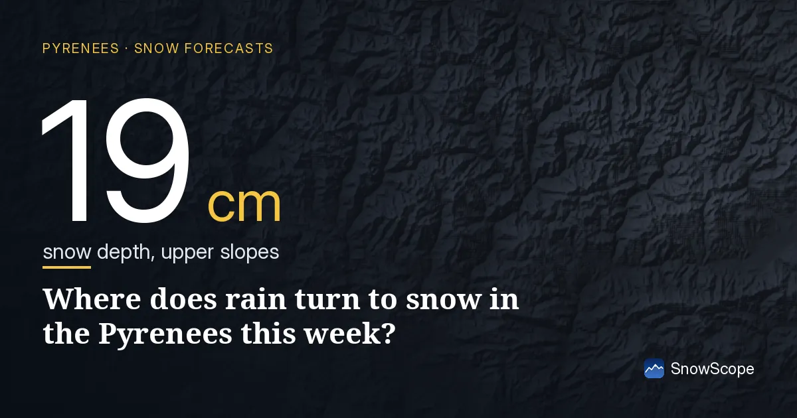
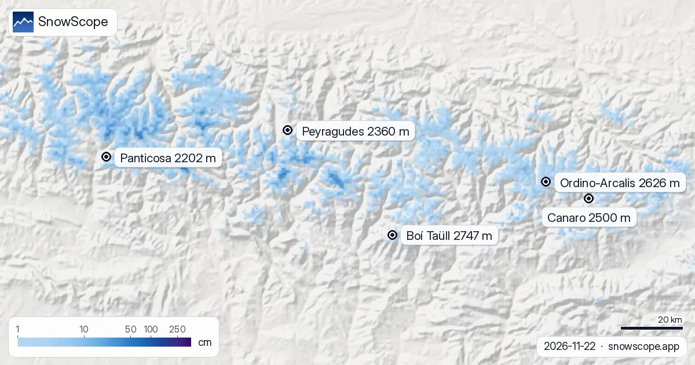

Where does rain turn to snow in the Pyrenees this week?
Rain will fall on snow at several Pyrenees resorts this week because the freezing level climbs well above the mountains' bases. By Tuesday and Wednesday, rain-on-snow risk is real at lower resorts, but high elevations stay cold and gain new snow.
See the live snow forecast for Boí Taüll in the SnowScope appSnow depth, powder alerts and the 3D map, free.
The freezing level rises sharply Monday and Tuesday
Today the 0 °C level sits between 1660 m and 2290 m across the range. Tomorrow it jumps: the highest point where air temperature is freezing reaches 3200 m in the north, and 3030 m to 3070 m in the central and southern resorts. This is a big warm-up. Wednesday brings similar heights before it drops back to around 2000 m on Thursday.
The practical question is: where does precipitation fall as rain, and where as snow? Our snow estimates the snow line sits about 300 m below the freezing level during the warmest hours. So on Tuesday, snow line climbs to around 2900 m at high resorts like Panticosa, and 2700 to 2800 m at mid-mountain areas such as Ordino-Arcalis and Canaro.
| Resort | Snow depth | New snow, 72 h | Coming, next days | Top |
|---|---|---|---|---|
| Boí Taüll | 8 cm | 5 cm | 9 cm | 2,747 m |
| Ordino-Arcalis | 6 cm | 5 cm | 14 cm | 2,626 m |
| Canaro | 13 cm | 4 cm | 11 cm | 2,500 m |
| Peyragudes | 19 cm | 6 cm | 9 cm | 2,360 m |
| Panticosa | 7 cm | 9 cm | 18 cm | 2,202 m |

Rain on snow arrives Wednesday at lower resorts
Ordino-Arcalis, Canaro, Peyragudes, and Panticosa all face rain-on-snow risk on Wednesday when precipitation falls while the snow line stays above the base. Panticosa is hit hardest: snow line reaches 2900 m, well above its top at 2202 m, so all slopes see rain. Peyragudes also faces risk on Thursday.
Boí Taüll is safer: its top sits at 2747 m, and the snow line only climbs to 2600 m on Tuesday and Wednesday, leaving upper slopes in snow. Baqueira-Beret, higher still, receives 100 percent snow at its summit throughout the period.
New snow arrives where it stays cold
Upper slopes at 2500 m and above accumulate new snow despite the warm spell. Panticosa gains 18 cm over the next days, most of it falling as snow above 2200 m even when the freezing level is high. Ordino-Arcalis collects 14 cm, Canaro 11 cm, and Peyragudes 9 cm. At high summits like Boí Taüll and Baqueira-Beret, every drop becomes snow.
The pattern is clear: the warm air mass lifts the freezing level high enough to bring rain to mid-mountain over the next two days, but high peaks stay in the snow engine. Thursday brings a cool-down and the freezing level drops back to 1800 to 2300 m, locking in the new snow by then on the slopes.
What this means in the mountains
If you are heading to Panticosa, Ordino-Arcalis, or Peyragudes, Wednesday is the day to watch. Snow line above your base means rain on old snow, which loosens the bond between layers. Check the official avalanche bulletin before going off-piste. Thin early-season snowpack amplifies the risk.
Boí Taüll and higher resorts keep snow on upper slopes throughout. By Thursday, the whole range resets colder, and new snow sticks to what has been laid down. The region gains from 20 cm at Baqueira-Beret down to 11 cm at Saint-Lary over the next five days. By Sunday, the forecast the forecast shows snow cover reaching 9560 km² and 51 of 53 resorts with snow on the ground.
Tips for skiers
- Wednesday: avoid off-piste at Panticosa, Ordino-Arcalis, Canaro, and Peyragudes where rain falls on early-season snow. Stick to groomed runs or wait for Thursday when it cools.
- High elevations above 2500 m gain clean new snow all week. Seek those slopes if you want the best texture.
- Thursday and Friday become stable as the freezing level drops. That is when the new snow sets and the range is safest for backcountry.
- Check the official avalanche bulletin for each country before leaving marked terrain.
- Rocks may still show through thin early snow even at high elevation. Stay aware on steep slopes.
About these numbers
Resort snow depths are the deepest snow on the resort's upper slopes on the date shown; they are estimates for an area, not a measurement at one point. Forecasts can change. Always read the official avalanche bulletin before going off-piste.
Official avalanche bulletins: Météo-France / Meteocat / AEMET
Cite this report
For research, teaching or the press: the numbers and charts are free to reuse under CC BY 4.0 with this citation.
SnowScope (2026), Where does rain turn to snow in the Pyrenees this week?, https://snowscope.app/blog/en/2026/11/pyrenees-freezing-level-snow-line-22-november-2026.html, accessed 2026-11-22
SnowScope (Atlas Labs). (2026, November 22). Where does rain turn to snow in the Pyrenees this week?. SnowScope snow reports. https://snowscope.app/blog/en/2026/11/pyrenees-freezing-level-snow-line-22-november-2026.html
BibTeX
@misc{snowscope2026pyreneesfreezinglevelsno,
author = {{SnowScope (Atlas Labs)}},
title = {Where does rain turn to snow in the Pyrenees this week?},
year = {2026},
month = nov,
howpublished = {\url{https://snowscope.app/blog/en/2026/11/pyrenees-freezing-level-snow-line-22-november-2026.html}},
note = {Published 2026-11-22 12:41 UTC; accessed 2026-11-22}
}· CC BY 4.0 · Methods, data and tools →
Boí Taüll: snow and temperature by height, this winter vs last (tools) →
Follow Boí Taüll
Free: a message when fresh snow is coming, and the forecast every morning.
More snow reports

Pyrenees day passes from 46 EUR: six resorts in France, Spain and Andorra compared by price, then by the snow they usually have in December and January.

Two-week snow outlook in Andorra: 13 cm and 21 cm. Snow cover, new snow, resorts and the days ahead in Andorra on 17 November.

The 0 °C level across the Pyrenees ranges from 2,230 m to 2,820 m over the next days. Snow stays safe from rain as the snow line sits low at each resort.